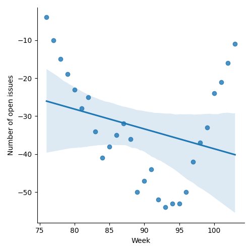
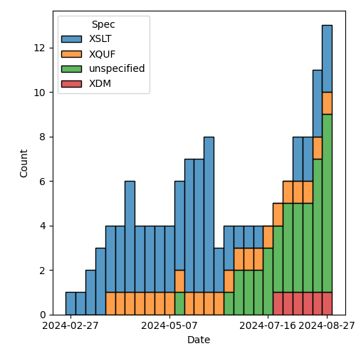
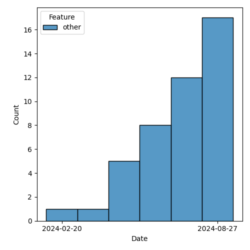

QT4 CG Meeting 088 Minutes 2024-09-03
Meeting index / QT4CG.org / Dashboard / GH Issues / GH Pull Requests
Table of Contents
- Draft Minutes
- Summary of new and continuing actions
[0/4] - 1. Administrivia
- 2. Technical agenda
- 2.1. Where are we?
- 2.2. PR #1409: 1401 Rewrite of F+O section 20, Casting
- 2.3. PR #1393: 1391 Change function-annotations to return a sequence
- 2.4. PR #1384: 1316 Type declarations in quantified expressions
- 2.5. PR #1344: 1343 Drop the static typing feature
- 2.6. PR #1367: 1321 leading lone slash
- 2.7. PR #1361: 1337 Atomic value becomes atomic item
- 2.8. PR #1360: 1348 Some grammar simplifications
- 2.9. PR #1358: 959 fn:unix-time
- 2.10. PR #1228: – Adding the BLAKE3 hashing algorithm to fn:hash
- 3. Any other business
- 4. Adjourned
Draft Minutes
Summary of new and continuing actions [0/4]
[ ]QT4CG-080-07: NW to update the build instructions in the README[ ]QT4CG-082-02: DN to work with MK to come to agreement on the fn:ranks proposal[ ]QT4CG-087-01: DN to update PR #1228 to reflect MK’s compromise and update the vulnerabilities[ ]QT4CG-088-01: NW to consider how best to add a dedication to MSM.[ ]QT4CG-088-02: CG to add an issue about built-in, named record types.[ ]QT4CG-088-03: MK to add an example of duplicate function-annotations being returned.[ ]QT4CG-088-04: [Someone] needs to update the processing model diagram needs vis-a-vis the static typing feature
1. Administrivia
1.1. Roll call [10/11]
[X]Reece Dunn (RD)[ ]Sasha Firsov (SF)[X]Christian Grün (CG)[X]Joel Kalvesmaki (JK)[X]Michael Kay (MK)[X]Juri Leino (JLO)[X]John Lumley (JWL)[X]Dimitre Novatchev (DN)[X]Wendell Piez (WP)[X]Ed Porter (EP)</>C. M. Sperberg-McQueen (MSM)[X]Norm Tovey-Walsh (NW). Scribe. Chair.
1.2. Accept the agenda
Proposal: Accept the agenda.
Accepted.
1.2.1. Status so far…
These charts have been adjusted so they reflect the preceding six months of work.

Figure 1: “Burn down” chart on open issues

Figure 2: Open issues by specification

Figure 3: Open issues by type
1.3. Approve minutes of the previous meeting
Proposal: Accept the minutes of the previous meeting.
Accepted.
1.4. Next meeting
This next meeting is planned for 10 September. Any regrets?
None heard.
1.5. Review of open action items [1/4]
(Items marked [X] are believed to have been closed via email before this agenda was posted.)
[X]QT4CG-080-05: NW to add absolute property to the parse-uri output[ ]QT4CG-080-07: NW to update the build instructions in the README[ ]QT4CG-082-02: DN to work with MK to come to agreement on the fn:ranks proposal[ ]QT4CG-087-01: DN to update PR #1228 to reflect MK’s compromise and update the vulnerabilities
1.6. Review of open pull requests and issues
1.6.1. Blocked
1.6.2. Merge without discussion
The following PRs are editorial, small, or otherwise appeared to be uncontroversial when the agenda was prepared. The chairs propose that these can be merged without discussion. If you think discussion is necessary, please say so.
- PR #1406: Fix 1399 - clarify fixed-namespaces spec
- PR #1405: Fix #1404 by changing fn:invisible-xml grammar parameter to xs:string?
- PR #1402: Update schema for XSLT 4.0 to include agreed syntax changes
- PR #1400: 1395 Revise rules for subtyping of choice item types
- PR #1398: 1397 Add missing change log entry for constructor functions
- PR #1390: 1368 built in keywords improvements
- PR #1383: 1374 - allow static error for duplicate keys
- PR #1380: 1320 Attempt to resolve a bug in parse-uri
- PR #1370: 1369 fn:round: rounding-mode → mode
- PR #1359: 1346 Fix minor typos in format-number
- PR #1353: 1347 Add escape-solidus option to xml-to-json function
- PR #1352: 1350 Fix signature for unparsed-text-available
- PR #1342: 1339 Deprecate ordering mode declaration
- PR #1231: 1193 Parsing Functions: Empty input
Accepted.
- MK asks about parse and build URI
- NW summarizes: will try to have something by next week. Please respond to the email.
1.6.3. Close without action
1.6.4. XSLT focused
1.6.5. Substantive PRs
- PR #1409: 1401 Rewrite of F+O section 20, Casting
- PR #1393: 1391 Change function-annotations to return a sequence
- PR #1388: Attempt to resolve #1387 by clarifying the encoding rules
- PR #1384: 1316 Type declarations in quantified expressions
- PR #1367: 1321 leading lone slash
- PR #1364: Change to type() syntax to fix ambiguity
- PR #1361: 1337 Atomic value becomes atomic item
- PR #1360: 1348 Some grammar simplifications
- PR #1358: 959 fn:unix-time
- PR #1355: 1351 Add "declare record" in XQuery
- PR #1344: 1343 Drop the static typing feature
- PR #1296: 982 Rewrite of scan-left and scan-right
- PR #1283: 77b: Update expressions
- PR #1228: – Adding the BLAKE3 hashing algorithm to fn:hash
- PR #1209: 1183 Add transient mode and the transient{} expression
- PR #1185: 1179 array:values, map:values → array:get, map:get
- PR #832: 77 Lookup returning path selection
2. Technical agenda
The goal with respect to PRs this week is to close as many as we can. To that end, I’ve tried to arrange them such that the “easy” ones are at the top. If we discover that one of them isn’t easy, we’ll can move it to the bottom of the list move on until we’ve done all the easy ones we have time for.
2.1. Where are we?
- MK: Michael Sperberg-McQueen made enormous contributions over the years to XSLT and XML in general. He will be sorely missed.
- NW: Indeed.
- RD: Should we add a dedication to the specs?
- NW: I think that’s a good idea.
- JWL: Same thing.
ACTION QT4CG-088-01: Consider how best to add a dedication to MSM.
One measure of this question is the list of open “required-for-4.0” issues. But perhaps we should take a broader perspective.
- JWL: My interests are mostly in XPath and XSLT and I’ve got a sense that the
XSLT has sort of been pushed to the side. There are three or four major
changes. But there’s a sense that some of the short cutting and other features
haven’t been considered in detail in XSLT.
- Things like the pipeline construct which is similar to the arrow constructs in XPath.
- Do we need more, are we missing anything obvious?
- RD: I’m happy to dedicate more time to XSLT. What is the remit of XSLT. As I understand it, XSLT is an alternate XML-style syntax to what you can do XPath and XQuery.
(Several members of the group express that that’s not a good summary)
- MK: There is a lot of overlap.
- RD: When we’re looking at new functionality to add to XSLT, what criteria do
we apply. When we talk about features in XPath/XQuery, should we also talk
about XSLT?
- For example, declaring the type of a variable.
- MK: My perspective is that we’ve done most of the things that I thought were
important. Perhaps not yet completely and adequately yet. We have ways of
creating maps and arrays. We’ve cleaned up some things. We’ve handled
functions, keyword arguments, and variadic functions. We’ve done some work on
modes. There’s a little more to be done there, particularly in template rules
applied to maps and arrays.
- By and large I think we’ve done the big things.
- JK: I think we could probably find a way forward if we just schedule one monthly meeting for XSLT.
- MK: I think it has to be driven by what’s on the agenda. What drives the group are concrete proposals on the table that need to be discussed.
- WP: I think we have a scoping question. I need to be updated about what’s on the table. Maybe it would be useful to have a status check, and a window to discuss new features.
- NW: I think that’s what issues and PRs are for.
- RD: I wonder if it would make sense to aim for having one XSLT issue to review
and discuss in each meeting. Rather than having a specific meeting.
- Should we also discuss if XSLT changes are needed whenever we discuss a new feature.
- NW: I’ll try to organize the agendas to make XSLT feature more prominently.
- DN: Not specifically about XSLT, this is about status and progress more generally.
- From a purely project management aspect, I think we can improve quite a bit.
I’d propose that if we really want to give to the users the next version of
the X* languages in the next few years, we can each select the top three
issues and the draw a line under it.
- I think generators, fold lazy, and collections would be the top of my list.
- We can make a critical path, then work until we shorten it.
- I have the feeling that we focused on the low-hanging fruit, but there are larger, strategic issues. We shouldn’t forget about those.
- Maybe we should periodically have meetings focused on the longer term, strategic goals.
- From a purely project management aspect, I think we can improve quite a bit.
I’d propose that if we really want to give to the users the next version of
the X* languages in the next few years, we can each select the top three
issues and the draw a line under it.
- JWL: How much of what we’re doing is actually being implemented? That’s one way you find out if these things work. I’m trying to do that kind of work myself.
- MK: I feel like I’m up-to-speed in working out what’s implementable. A few things I’m struggling to implement, but that’s because of the constraints of the architecture of an existing product and so on. Perhaps slightly less than I’d like in terms of understanding the benefits of using particular features. But probably enough to feel reasonably comfortable that things work together as a whole. There are issues. We know we have duplication and multiple solutions in some places. It’s always harder to get rid of things.
- CG: We’ve started with the features that are most interesting to us. We’ve already implemented some of the features. Regarding the other features: I tried to give feedback as early as possible when I have the impression that something is easy or hard to implement. But we try to do proof-of-concept implementations as quickly as we can. To avoid things being too specific to a single implementation, for example. The more complicated features tend to be more comprehensively specified.
- JLO: Even though in eXist DB we don’t have a good track record with XPath 4.0,
I think we’re still doing completeness for 3.1, I do look at those features
through the eye of “is that even possible” and give feedback. It’s more a
matter of time and budget.
- I would like to circle back to something that DN said, that we should identify the critical path, and focus on that. I thought that’s what we did in Prague when we marked the “required for 4.0” issues.
- It would be good to have half an hour ever few weeks to talk about the broader issues. I’d like to have a collection subtype, for example, but I can see how that might be too difficult.
There are a lot of good ideas in there. NW will try to do better on the agendas and organizationally.
- DN: The “we” in Prague was not “we” as a whole.
- MK: Yes, but there are things you can accomplish at f2f meetings that are hard to accomplish on weekly phone calls.
2.2. PR #1409: 1401 Rewrite of F+O section 20, Casting
See PR #1409
MK observes that the summary in PR #1409 outlines the changes that were made. It turned out a bit wider than originally expected. From the PR:
The main changes are:
- The three derived types xs:integer, xs:dayTimeDuration, and xs:yearMonthDuration are no longer treated as primitive for the purpose of this section. They are now treated as derived types, but given special status where necessary as "quasi-primitive".
- In places where the F+O rules give the same result as the canonical representation in XSD 1.1, we now defer to XSD 1.1 rather than replicating the rules. Many of the rules originate with XPath 2.0, which was published before XSD 1.1, but which anticipated some of the changes in XSD 1.1, for example the use of a seven-component model for dates/times, and a two-component model for durations. XPath 3.0/3.1 failed to take advantage of the resulting opportunity for rationalisation.
- Generally the language is a bit less terse, with more notes and examples
- The rules have more to say about the type annotation of the result. In some places the spec appeared to imply that the type annotation on the result must be the target type; in others it appeared to imply that the type annotation must be unchanged from the source (for example 19.1.1 "If ST is xs:string or a type derived from xs:string, TV is SV. [presumably with unchanged type annotation]). The spec is now hopefully clearer that the result TV MUST be an instance of TT and MAY be an instance of some other type derived from TT, especially in the case where the value is unchanged.
Discussion continues:
- RD: I wonder if this is the right approach. With things like integer vs decimal, they are two different things. An integer is a subset of decimal, but they’re effectively two distinct types.
- MK: They are in some respects, but they aren’t in others.
- What this reorganization attempts to do is make it possible for them to follow the general rules for derived types.
- The special rules are mainly that downcasting behaves differently.
- MK: None of this changes the rules, only the presentation.
- RD: Are they called primitive types in XML Schema?
- MK: Yes. But XSD muddies the waters by using the words “type” and “data type”
interchangably.
- Some of the discrepancies appear to arise from places where we wrote the prose before XSD 1.1 existed.
- Generally, try to use the XSD 1.1 definitions.
Proposal: accept this PR.
Accepted.
2.3. PR #1393: 1391 Change function-annotations to return a sequence
See PR #1393
- MK: This one is a little more complex. I’ve tried to incorporate the corrections suggested.
- We no longer return a map because you can have two annotations with the same name.
- RestXQ does this, apparently
- We now return a list of key/value pairs.
- We no longer return a map because you can have two annotations with the same name.
- CG: Would it make sense to make the pair record a built-in type?
- It’s used in several places.
- MK: Having built-in, named record types does have some attraction. I think it’s an orthogonal issue, but it’s one that this raise.
ACTION QT4CG-088-02: CG to add an issue about built-in, named record types.
- JWL: It would be nice to have an example that returned a duplicate.
- MK: Yes.
ACTION QT4CG-088-03: MK to add an example of duplicate function-annotations being returned.
Proposal: accept this PR.
Accepted.
2.4. PR #1384: 1316 Type declarations in quantified expressions
See PR #1384
- MK: This is one of those rounding-off-for-completness things.
- This brings things in to better alignment.
- I can’t really imagine anyone using it, but for orthogonality and completeness we should provide it.
MK summarizes the changes in the diff.
- DN: Are there any examples?
- MK: Yes, there are examples that use the syntax. It’s hard to motivate.
- JLO: What happens when a satisfies fails?
- MK: It may return true or raise a type error, the “cat” example is demonstrating that you don’t need to evaluate the whole sequence.
- DN: Related to JLO’s question. What will happen if a conversion will happen. What if the current item isn’t exactly the right type.
- MK: It’s atomized and coercion applies.
Proposal: accept this PR.
Accepted.
2.5. PR #1344: 1343 Drop the static typing feature
See PR #1344
- MK: This is motivated by the fact that I don’t think any actively developed
implementations are using the static typing feature. It was implemented by
some teams in the 1.0 days, but the general feedback is that the feature is
fairly unusable.
- It was already “semi-dropped” from the spec because we no longer said exactly what static typing rules must be applied.
MK summarizes the changes in the proposal.
ACTION QT4CG-088-04: ?? the processing model diagram needs to be update
- DN: Will this change cause backwards compatibility problems?
- MK: It’s a bit like the situation with XQuery Update. We haven’t defined a way
forward for that, we’ve left it behind.
- We haven’t defined a way forward for processors that have implemented the feature.
- DN: Can a process continue to support an obsolete feature?
- MK: If they continue to support it, it would be in a mode outside the scope of the specification.
- DN: But not backwards incompatible?
- MK: If a query wants to conform to the 4.0 spec and run with any 4.0 processor, it can’t depend on static typing.
- DN: So a processor could raise errors if it was using this feature.
- RD: My understanding with static typing is that if a processor can determine
statically that a given expression will return an error, then that processor
may flag that error at static type, rather than waiting until it’s evaluated dynamically.
- In effect, a processor that implements static typing should still be conformant.
- MK: No, that’s not the way it works. The old static typing feature was pessimistic: it had to report an error if there was any possibility of an error at runtime.
Some further discussion of when and how a processor might raise a static error. You can always raise an error if you know it will fail, but you don’t have to report an error if it could fail.
- DN: MK has shown us and we agree that pessimistic static typing has failed to do what it was expected to do. We’re removing it in version 4.0. Will it not be a good thing to also declare this as an error and put it in the errata for the previous versions.
Proposal: accept this PR.
Accepted.
2.6. PR #1367: 1321 leading lone slash
See PR #1367
- MK: This is unfinished business. I discovered that changes I’d made to the definition of tokenization should have caused changes here that we failed to make.
MK summarizes the changes in the PR.
- MK: The most convoluted clarification is what happens if “/” is followed by a
“[“. If you’re looking for a token, you might see that the next thing is an
element constructor, you don’t back track if it isn’t. We say clearly when we
make that identification.
- That effects the detail of when a leading slash is ambiguous and how we resolve it.
- I used a query to make the start of a relative path expression clearer.
Proposal: accept this PR.
Accepted.
2.7. PR #1361: 1337 Atomic value becomes atomic item
See PR #1361
MK observes that there are thousands of changes in this diff. I looked at each example, I didn’t do a global search and replace. It didn’t have any impact in the areas that I was concerned about. It’s a change that doesn’t effect the substance of the language.
Proposal: accept this PR.
Accepted.
2.8. PR #1360: 1348 Some grammar simplifications
See PR #1360
Leave this for next week. There’s no diff.
2.9. PR #1358: 959 fn:unix-time
See PR #1358
CG introduces the PR.
- CG: It’s a simple function that converts a (unix time) integer into an
xs:dateTime. - DN: I think a better name would be
unix-dateTimesince it returns axs:dateTime. - CG: The reason it’s called
unix-timeis that that was the original term. - JWL: Are there one too many “9”s in the third example?
- CG: Maybe, I’ll have to check. Thanks.
- JK: Is there a need to go in the opposite direction?
- CG: There’s no need, it’s possible.
- JK: If there might be a need in the future, that might have an impact on the naming.
NW muses about going the other way.
- RD: Could we add a note about 32 bit vs. 64 bit Unix time?
- NW: Saying what? Just observing the end of the epoch?
- RD: I suppose the question is, should we require that implementors use 64 bit numbers.
Proposal: accept this PR.
Accepted.
2.10. PR #1228: – Adding the BLAKE3 hashing algorithm to fn:hash
3. Any other business
- None heard